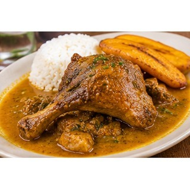

Reseña del cantón
Ventanas es un cantón con una importante tradición agrícola y comercial en la provincia de Los Ríos. La producción de arroz, maíz y cacao contribuye a la actividad económica de sus habitantes. Los mercados y el movimiento de productos del campo forman parte de su vida cotidiana. Sus comunidades también mantienen tradiciones montuvias, platos típicos y festividades locales.
Población
73.211 habitantes (Censo de Población y Vivienda 2022).
Parroquias
Ventanas (cabecera cantonal), Zapotal, Chacarita y Los Ángeles.
Economía y cultura
El intercambio comercial de productos agrícolas es importante para la vida del cantón. Las ferias, los mercados y las costumbres montuvias reflejan la relación entre las zonas rurales y los espacios urbanos.
Alcalde
Carlos Carriel — período 2023–2027.

Fuente: Directorio oficial de alcaldes y alcaldesas de AME.
Platos típicos
Seco de pato, seco de gallina criolla, chancho hornado y guatita.

Estas preparaciones se documentan como parte de la gastronomía local. Su disponibilidad y preparación pueden variar entre comunidades.
Lugares turísticos
Balnearios de agua dulce, riberas y espacios recreativos; también se puede conocer la actividad comercial y agrícola local.
Hoteles y hospedaje: ubicación y direcciones
Estos establecimientos aparecen en directorios públicos y resultados de mapas consultados. Confirma por teléfono que sigan operando, sus tarifas y disponibilidad antes de viajar.
- Hotel Servicios de Alojamiento y Alimentación del Río Ventanas
Dirección o referencia: Malecón y calle Seminario, Ventanas.
Ver ubicación y cómo llegar en Google Maps
Mapa del cantón
Mapa de Google Maps centrado en el cantón: